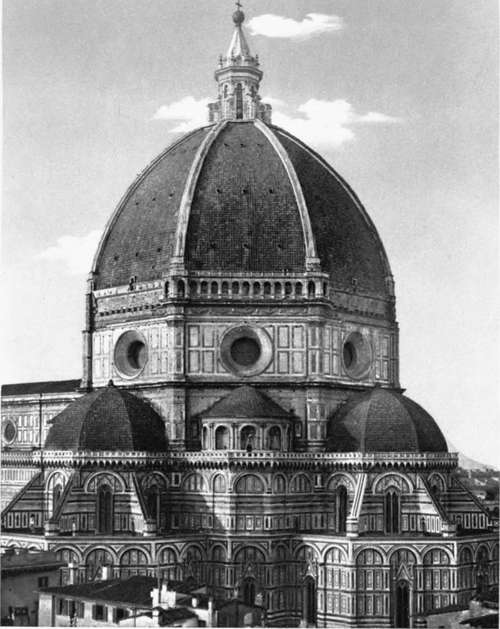
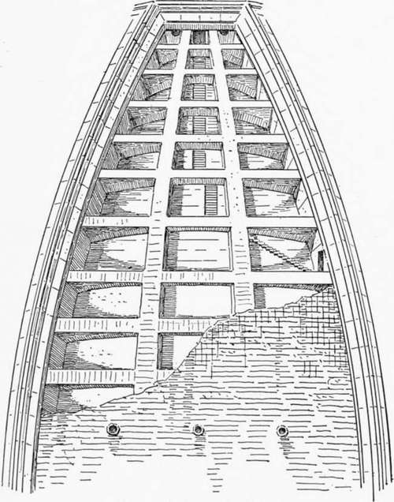
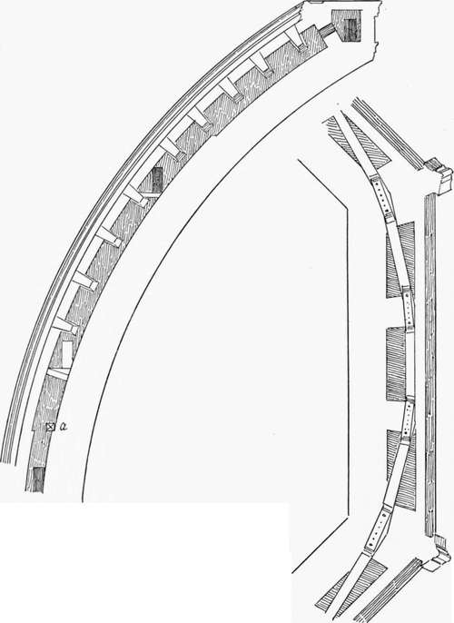

The Dome Of Florence. Part 2
Description
This section is from the book "Character Of Renaissance Architecture", by Charles Herbert Moore. Also available from Amazon: Character of Renaissance Architecture.
The Dome Of Florence. Part 2
Such were the models of mediaeval dome building accessible to Brunelleschi when he was forming his great scheme for the covering of the octagon of the cathedral of Florence. But the idea of a low dome, or a hidden dome, could not meet the wishes of the Florentines of the fifteenth century. Their civic pride and large resources called for an imposing design which should make the dome a dominant architectural feature of their city. It was decided that it should be raised upon the top of a high drum, and the task to which Brunelleschi applied himself was to fulfil this requirement.
1 This needs to be qualified. The thrusts of the dome being continuous logically call for continuous abutment, as in the Pantheon, but the intervals between the abutting members are so small that the resistance is practically continuous.
2 By its architectural character, i mean its character as a work of art. By the term " architecture" we properly mean not building merely, but the fine art of beautiful building.
Of the vast and soaring dome which he succeeded in erecting many opinions have been held, but all beholders are impressed with its grandeur. It has been common to speak as if the master had been chiefly inspired by the ancient monuments of Rome, and had taken the Pantheon as his principal model.1 But although he came to his task fresh from the study of the ancient Roman monuments, and undoubtedly had the Pantheon much in mind, yet the dome which he produced has little in common with that great achievement of imperial Roman constructive skill. In general it follows, though with great improvements as to outline and proportions, the scheme of Arnolfo as illustrated in the fresco of the Spanish Chapel; but the model to which it most closely conforms, notwithstanding the obvious and essential points of difference, is that of the Baptistery just described. There can, I think, be little question that this monument supplied the chief inspiration and guidance to both Arnolfo and Brunelleschi. A comparison will show that the dome of the cathedral, with its supporting drum, is, in fact, little other than a reproduction of the Baptistery of San Giovanni in a modified form, and enlarged proportions, raised over the crossing.
But while taking the scheme of the Baptistery as the basis of his own scheme, Brunelleschi was obliged to make some daring changes in order to give his design the external character which he sought. This great dome (Plate I), like that of the Baptistery, is octagonal in plan and pointed in elevation. It rises from the top of the octagonal drum, and consists of two nearly concentric shells of masonry, with an interval between them. Eight vast ribs of stone rise from the angles of the drum and converge on the curb of an opening at the crown. These ribs extend in depth through the whole thickness of the double vault and unite its two shells. Between each pair of these great ribs two lesser ones are inserted within the interval that divides the two shells, and nine arches of masonry, lying in planes normal to the curve, are sprung between the great ribs and pass through the lesser ones on each side of the polygon (Figs. 7 and 8), while a chain of heavy timbers (a, Fig. 8, and Fig. 9), in twenty-four sections, clamped together at the ends with plates of iron, binds the whole system between the haunch and the springing. So much of the internal structure can be seen in the monument itself, but further details are described in Brunelleschi's own account of what he intended to do.1 From this we learn that the base of the dome, which was to be built solid to the height of 5 1/4 braccia, was to consist of six courses of long blocks of hard stone (macigno) clamped with tinned iron and upon this were to be chains of iron.1 Mention is also made of a chain of iron over the timber chain (" in su dette quercie una catena di ferro "); but no such chain is visible in the monument.
1 This has been based on the affirmations of Vasari, who states that it was Brunelleschi's purpose to " restore to light the good [i.e. the ancient Roman] manner in architecture," and that he had "pondered on the difficulties" involved in vaulting the Pantheon. Cf. Le Opere di Giorgio Vasari, Milanesi edition, Florence, 1880, vol. 2, p. 337.
Plate I
Dome Of Brunelleschi Florence
Fig. 7. — System of the dome.
Fig. 8. — Section.
1 A copy of this document is said to have been preserved for some time in the archives of the Board of Works, but it seems to have disappeared subsequently. It is given, however, by several writers, Vasari and Guasti among them. There are slight differences of wording and of measurements between the transcripts of these two authors. That of Guasti is the most intelligible, and seems to agree best with the monument. It reads as follows: " In prima : la cupola, dallo lato di dentro lunga a misura di quintoacuto, negli angoli sia grossa nella mossa da pie braccia 3, e piramidalmente si muri; sicche nella fine, congiunta con 1' occhio di sopra, che ha a essere fondamento e basa della lanterna, rimanga grossa braccia 2. Facciasi un' altra cupola di fuori sopra questa, per conservarla dallo umido, e perche la torni piu magnifica e gonfiata; e sia grossa nella sua mossa da pie braccia i, e piramidalmente segua, che insino all' occhio rimanga braccia f.
" El vano che rimarra da 1' una cupola all' altra, sia da pie braccia 2 : nel quale vano si metta le scale per potere cercare tutto tra 1' una cupola e 1' altra; e finisca '1 detto vano a 1' occhio di sopra braccia 2.
Continue to: